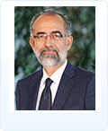
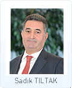
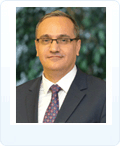
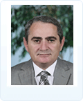
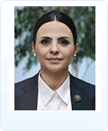
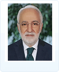
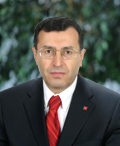
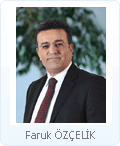
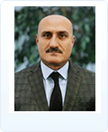

CORPORATE GOVERNANCE
QUICK ACCESS
- Recep Süleyman ÖZDİL Chairman
-

Recep Suleyman Ozdil was born in Istanbul in 1961. He graduated from Ankara University Faculty of Political Science, Department of Economics. After beginning his professional career as an Auditor at a private company in 1984, Ozdil served as a Specialist, Assistant Manager and Branch Manager at Albaraka Turk Ozel Finans Kurumu A.S. in the years from 1986 to 1993. He worked as a Finance Coordinator at a private company between 1993 and 1995 before performing his duties as Assistant General Manager at İhlas Finans Kurumu A.S. from 1995 to 2001 and at Family Finans Kurumu A.S. from 2001 to 2005. Ozdil served as board member and General Manager at Birlesik Fon Bankasi A.S. from 2005 till 2011, and as a board member of the Savings Deposit Insurance Fund between 2011 and 2014. He has been serving as Chairman of T. Halk Bankasi A.S. since August 28, 2015.
- Sadık TILTAK Independent Board Member-Vice Chairman of Board of Directors
-

He graduated from the Ankara University Faculty of Political Sciences Department of Public Finance. He started his career as an Assistant Inspector at T. Garanti Bankası A.Ş. in 1988 and later served as a Branch Manager and Manager at the same bank’s Head Office Departments. He was appointed as a Board Member at the T. Vakıflar Bankası T.A.O. on March 30, 2012, and served as a Member of the Loans Committee, Corporate Governance and Appointment Committee and Audit Committee of T. Vakıflar Bankası T.A.O. Besides this, he also served as the Chairman of Vakıf Finans Factoring Hizmetleri A.Ş. and Vice Chairman of Vakıf Gayrimenkul Değerleme A.Ş., Vakıf Pazarlama ve Ticaret A.Ş. and Vakıf Portföy Yönetimi A.Ş. as well as a Board Member of Halk Hayat ve Emeklilik A.Ş. Tıltak has been serving as an Independent Board Member since April 1, 2014 and as the Vice Chairman as of March 31, 2016 at Türkiye Halk Bankası A.Ş. He is also a Board Member of Halk Sigorta A.Ş.
- Osman ARSLAN General Manager and Board Member
Arslan was born in Ankara in 1971. He earned a bachelor's degree in statistics from the Middle East Technical University. He later completed an MBA program at the same university. In 1995, he launched his professional career at Ziraat Bank. From 1998 to 2004, he served in executive positions at various private banks. Between 2004 and 2012, he worked as a Division Manager, Head of Department, and as the Deputy General Manager at Halkbank, and went on to become the General Manager of A&T Bank. In March 2012, he began serving as the Executive Vice President for Financial Coordination at Ziraat Bank. As of January 2013, he started to work as the Executive Vice President for International Banking and Partnerships, and as of August 2014, as the Executive Vice President for Information Technologies at the same bank. He served as the CEO of Ziraat Participation Bank from February 2015 to June 2017. He was appointed as the General Manager of Halkbank on June 8, 2017.
- Yunus KARAN Board Member

Yunus Karan was born in Giresun in 1940. He received his bachelor’s degree in finance and accounting from the Istanbul University Faculty of Economics and Administrative Sciences in 1964. Karan began his professional career at T.C. Ziraat Bankası A.Ş. in 1965 and served as Branch Manager in various branches of the bank until 1996. He then served as the Fatih Branch Manager of İhlas Finans Kurumu A.Ş. between 1996 and 1999. Karan was a Board Member at the Ziraat Leasing Finansal Kiralama A.Ş. from 2002 until May 2012 and an Independent Board Member at Halk Gayrimenkul Yatırım Ortaklığı A.Ş. between May 14, 2012 and March 31, 2014. He has been serving as a Board Member at Türkiye Halk Bankası A.Ş since April 1, 2014. He is also a board member at Halk Gayrimenkul Yatırım Ortaklığı A.Ş.
- Cenap AŞCI Board Member
-

He was born in Aksaray in 1967 and graduated from the Istanbul University Faculty of Political Sciences Department of Public Administration in 1988. He received his masters degree from the USA, from the Boston University Faculty of Administration Sciences on International Trade.
He started to his career as a Customs Deputy Inspector in 1989. Later he served as a Customs Inspector, Customs Chief Inspector, the Vice President of the Inspection Board of the Undersecretariat of Customs, the Head of the Directorate General of Customs, Deputy General Manager of EGO, Deputy General Manager of Customs, General Manager of Customs and following that he was then appointed as the Undersecretary of the Ministry of Customs and Trade.He served as the Minister of Customs and Trade in the 63rd Government (Provisional Council of Ministers) formed on August 28, 2015.He has been serving as a Board Member of Türkiye Halk Bankası A.Ş. since March 31, 2016.Cenap AŞÇI, who speaks English, is married with three children - Maksut SERİM Board Member
-

Serim was born in Izmit in 1955. He received his bachelor's degree in theology at Marmara University. He earned his master's degree from the Department of Public Administration and Political Science at Atılım University. Between 1977 and 1998, he served as a clerk, chief, supervisor, deputy manager, and as deputy general manager at Vakıfbank. He later served as Public Information Adviser and then as Senior Adviser to the Prime Minister between 2003 and 2016. Serim currently serves as a Senior Adviser to the President, and has been a Board Member of Halkbank since June 8, 2017.
- Meltem TAYLAN AYDIN Board Member
-

Aydın was born in Ankara in 1973. She studied business at Istanbul University. Later, she completed her graduate studies on the macroeconomic performance of emerging economies and behavioral economics. In 2014, she was admitted to the Emerging Leaders program of Harvard University. She is currently doing an MBA at Harvard Extension School. Aydın currently serves as an Adviser to the President, and has been a Board Member of Halkbank since June 2017.
- Mehmet Nihat ÖMEROĞLU Independent Board Member
-

Ömeroğlu was born in Antakya in 1947. He studied law at Istanbul University and was appointed as a judge in 1975. Following his long duty as a judge, he served as the Director General of Legal Division and as the Director General of Criminal Division at the Ministry of Justice between 2003 and 2005. In 2005, he was appointed a member of the Court of Cassation. He retired in 2012. In November 2012, Ömeroğlu was elected as Turkey's first Chief Ombudsman by the Grand National Assembly of Turkey. Since June 8, 2017, he has served as a Board Member of Halkbank.
- Yahya BAYRAKTAR Independent Board Member
-

Yahya Bayraktar was born in Kemaliye, Erzincan in 1955. He graduated from Istanbul İmam Hatip High School in 1974, and went on to earn his bachelor's degree in Business Administration from the Middle East Technical University in 1981. Bayraktar began his professional career as assistant inspector at Yapı ve Kredi Bankası in 1982 and involved in the efforts to perform audits electronically and to switch to computerized systems suring the period when he sat on the Board of Inspectors between 1983 and 1988. In 1988, he joined Faisal Financial Institution as inspector and served as Head of the Board of Inspectors and served as Head of the Board of General Accounting, Marketing, Fund and Banking Services, Trade and Financing (Loan Operations) between 1991 and 2006. He later served as Branch Manager at Türkiye Finans Katılım Bankası between 2006 and 2009. Bayraktar is a member of the Board of Trustees of the Erzincan Educational and Cultural Foundation (EKEV) responsible for Student scholarships and the organization of education operations. He authored a book titled, "Dut Mevsimini Beklerken (Waiting for Berry Season)," where he compiled his articles on economics and finance. The book was published by EKEV in 2011. Between 2012 and 2016, he served as independent board member at Vakıf Menkul Kıymetler Yatırım Ortaklığı A.Ş., a subsidiary of Vakıflar Bankası. Bayraktar has been an Independent Board Member at our Bank and a Board Member of Halk Gayrimenkul Yatırım Ortaklığı A.Ş. since March 31, 2016.
- Faruk ÖZÇELİK Member of the Supervisory Board
-

Faruk Özçelik was born in Hadim, Konya in 1968. He is a graduate of the Banking and Insurance Academy of Ankara University and holds a master’s degree in International Relations (from Institute of Social Sciences, Selçuk University) and a bachelor's degree in Business Administration (from the Faculty of Political Sciences, Ankara University)
Özçelik began his career as Assistant Auditor at the Republic of Turkey Prime Ministry, General Directorate of Foundations, later serving as Auditor and Chief Auditor in the same institution and the Ministry of Public Works and Settlements.
Between 2004 and 2009, Özçelik worked as Deputy General Manager at the Prime Ministry, General Directorate of Personnel and Principals, and later served as the General Manager of the same institution until 2014.
He has also served as a director on the boards of Natural Disasters Insurances Authority and the Institute of Public Administration for Turkey and the Middle East (TODAİE), and as a member of the Supervisory Board of Turkish Maritime Operations (Türkiye Denizcilik İşletmeleri A.Ş.).
Özçelik was appointed as the Undersecretary of Ministry of Youth and Sports on January 26, 2014.
Currently, he serves as a member of the Supervisory Board of Türkiye Halk Bankası A.Ş., and on the Istanbul Olympic Games Presentation and Organization Committee.
Özçelik is married with two children.
His interests include football, volleyball, and athletics.
Özçelik speaks French, Arabic, and English. - Prof.Dr.Yılmaz ÇOLAK Member of the Supervisory Board
-

Çolak was born in Giresun in 1969. He earned his bachelor's degree in sociology from Middle East Technical University. He received his master's degree and Ph.D. from the Department of Political Science and Public Relations at Bilkent University. Between 1993 and 2010, he served as faculty at Bilkent University, Kırıkkale University, and Eastern Mediterranean University. In 2010, he began working at the Police Academy, and went on to become President of the Academy. Since June 8, 2017, he has served as a Board Member of Halkbank.